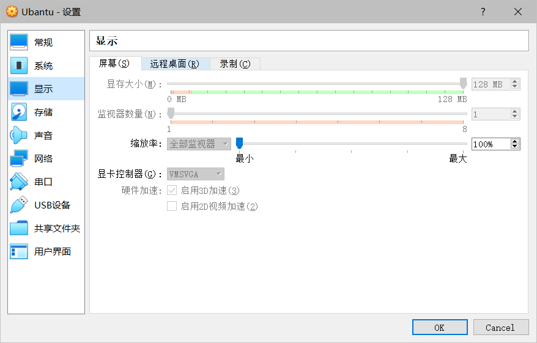
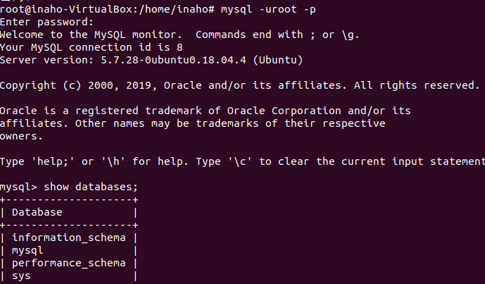

ubantu 配置 django 开发环境 链接到标题
预备 链接到标题
- Ubantu 镜像
- Python3
- pip3
- pymysql
- Django2.2
- Mysql 数据库
- virtualenv 虚拟环境
在 VirtualBox 上安装 Ubantu 操作系统 链接到标题
新建虚拟机，选择类型 linux,选择版本 ubantu64-bit，分配内存 4gb，选择创建虚拟硬盘，配置好之后，在设置里，设置显存大小 128m，启动 3d 加速.

应用设置，并启动系统，再开始界面选择需要导入的 ios 镜像，进入 ubantu 安装界面，并完成安装指导，建议自己分区。
ubantu 系统内已配置 python3，所以只需要安装后续软件即可。
进入系统后打开 terminal，首先输入 dpkg -l 查看已安装软件，是否有 python，如果有则不需要再安装 python。
安装 pip3 链接到标题
sudo apt-get update //更新软件源
sudo apt-get install python3-pip
pip3 --version //查看版本
sudo pip3 list //查看已安装的lib
安装 mysql 链接到标题
sudo apt-get install mysql-server mysql-client
sudo service mysql restart
mysql -uroot -p //进入mysql命令界面

安装 pymysql 链接到标题
pip3 install pymysql
安装 virtualenv 与 virtualenvwrapper 链接到标题
sudo pip3 install virtualenv
sudo pip3 install virtualenvwrapper
安装好 virtualenvwrapper 后还无法使用，创建目录存放虚拟环境
mkdir $HOME/.virtualenvs
# 在~/.bashrc中添加
export WORKON_HOME=$HOME/.virtualenvs
export VIRTUALENVWRAPPER_PYTHON=/usr/bin/python3
source /usr/local/bin/virtualenvwrapper.sh
# 运行
source ~/.bashrc
# 创建python3虚拟环境
mkvirtualenv -p 路径 /usr/bin/pythonX
删除:rmvirtualenv 虚拟环境名称
进入: workon 虚拟环境名称
# 其他命令
python -v //进度python命令终端
deactivate //退出虚拟环境
pip freeze 查看虚拟环境安装的包
安装 Django 链接到标题
pip install Django==1.11.7
django-admin startproject xxx 创建项目
python manage.py startapp xxx 创建一个应用
执行 python manage.py runserver 访问 localhost:8000,看到 it works 则项目启动成功！